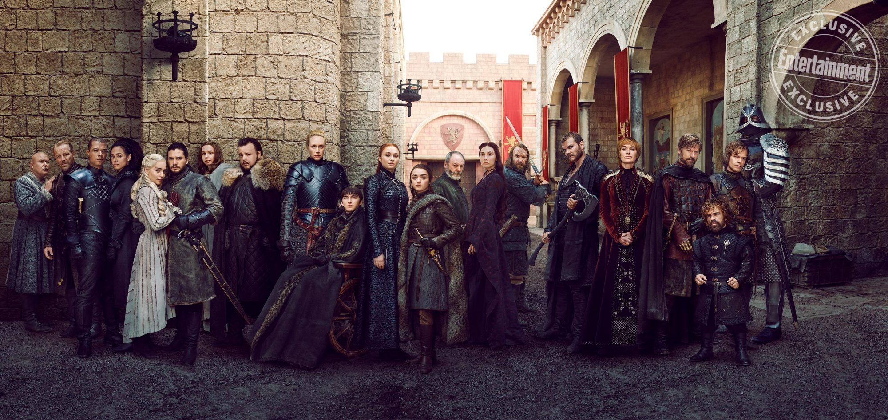

Katie Truchon
About Me
Katie was born and raised by two compassionate and patient educators by the seaside in Narragansett, Rhode Island. From an early age she learned a love of animals, cultivates a habit of falling into fantastical worlds through reading, and always tries to carry a camera, notebook, and deck of cards with her.
Katie an Assistant Professor of Information Technology and Video Game Design & Development at New England Institute of Technology. She primarily teaches introductory programming and digital graphics courses. Katie currently resides in Warwick with herher pack comprised of Jack, George, & Marlowe. When she is not teaching or hanging out with her four-legged roommates, she enjoys practicing yoga, cooking & baking, gardening, reading, and anything related to art/making.
She is a super-fan of Game of Thrones and a self-proclaimed nerd.
Schools
- New England Institute of Technology - MSIT May 2023
- Maine College of Art - BFA June 2012
- Narragansett High School - HS Diploma June 2008

Hobbies
- Cooking & Baking
- Gardening
- Yoga
- Hiking
- Watching TV & Films
- Reading
- Crafting & Costuming
- Live Music
- Art Galleries & Museums